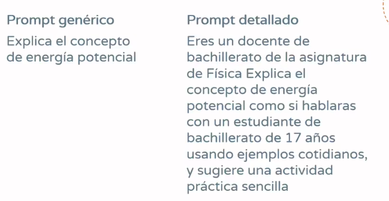

Diseño adaptativo
Recuerde que por cada 20 a 50 preguntas en ChatGPT, se consume medio litro de agua (García, 2024), por lo que deberá aprender a estructurar prompts efectivos antes de ejecutarlos en el modelo de su preferencia. Observe los siguientes prompts.

Tiempo de práctica.
Introduzca en el modelo de su preferencia los prompts proporcionados en la imagen y compare los resultados reflexionando sobre las siguientes preguntas:
1. ¿Cuál prompt entrega información más detallada?
2. ¿Puede usted detectar en el prompt detallado el rol, la tarea y el contexto?
Referencias.
García, B. (2024, septiembre 24). ¿Cuántos litros de agua gasta ChatGPT al día para resolver cada pregunta? Dinero en Imagen. https://www.dineroenimagen.com/actualidad/cuantos-litros-de-agua-gasta-chatgpt-al-dia-para-resolver-cada-pregunta/168792